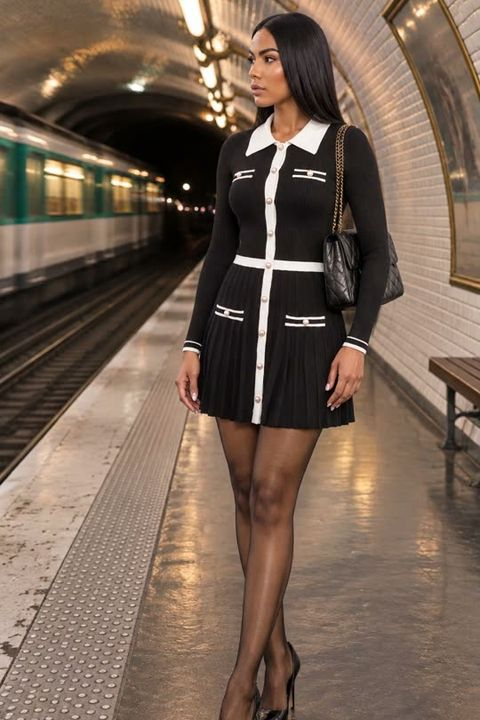
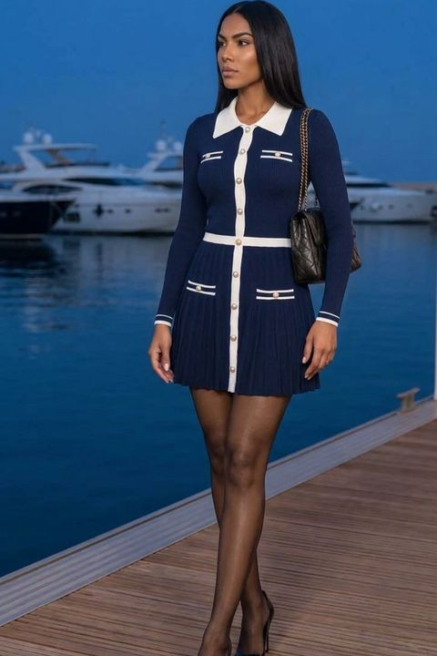
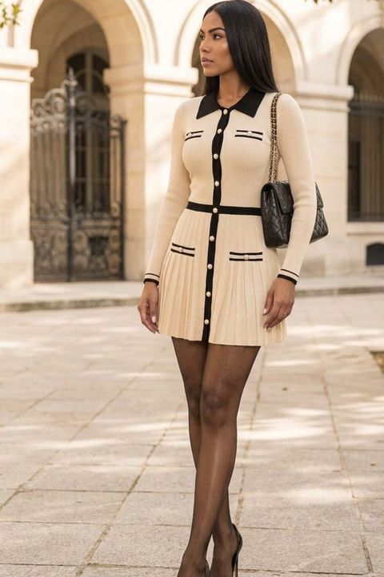
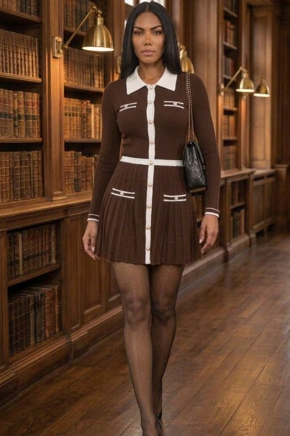
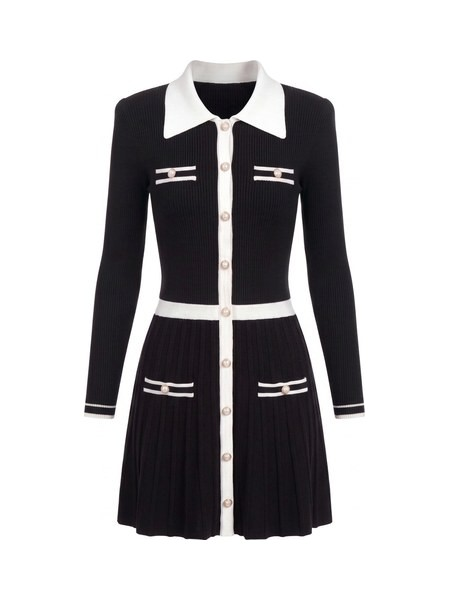

Diseñada en Montreal
Série UnPrendas de punto acanalado negro, contraste blanco, botones de perla de imitación.
Ver el vestido Ver la colección
Envío y cambios gratis. 30 días para cambiar de talla.

Negro y blanco
Azul marino y blanco
Marfil y negro
Marrón y blancoSérie Un en cuatro colores, cada uno en su escenario. Otros están en camino
La colección
 Negro y blanco
Negro y blanco Azul marino y blanco
Azul marino y blanco Marfil y negro
Marfil y negro Marrón y blancoPróximos colores4 colores, otros en camino
Marrón y blancoPróximos colores4 colores, otros en camino
-

01Disponible · 495 US$Vestido corto de punto con cuello en contraste
Corto, a medio muslo. Cuello y tapeta blancos, botones de perla de imitación, falda plisada.
-
 02
Próximamente
02
PróximamenteChaqueta corta de punto
Corta a la cintura, cinco botones de perla de imitación.
-
 03
Próximamente
03
PróximamentePantalón ancho de punto
Cintura alta blanca, largo completo.
-
 04
Próximamente
04
PróximamenteFalda corta plisada de punto
Pliegues planos, tapeta de botones de perla de imitación.
-
 05
Próximamente
05
PróximamentePolo de punto de manga corta
Corto, a la cintura. Cuello abierto, tres botones de perla de imitación.
Envío gratis
A EE. UU. y Canadá
Cambios gratis
En 30 días, etiqueta prepagada incluida
Aranceles incluidos
Nada que pagar al recibir